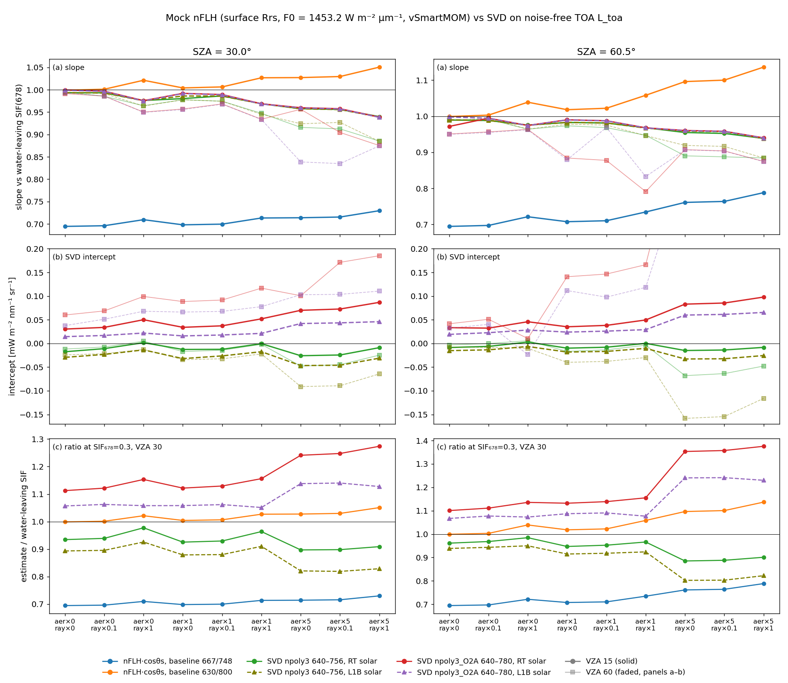
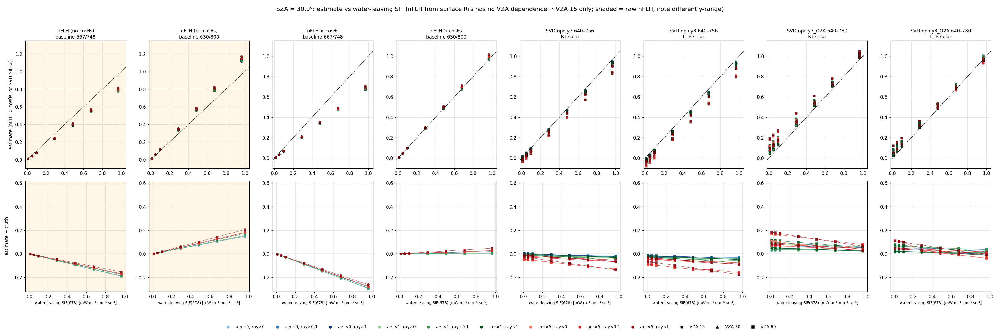
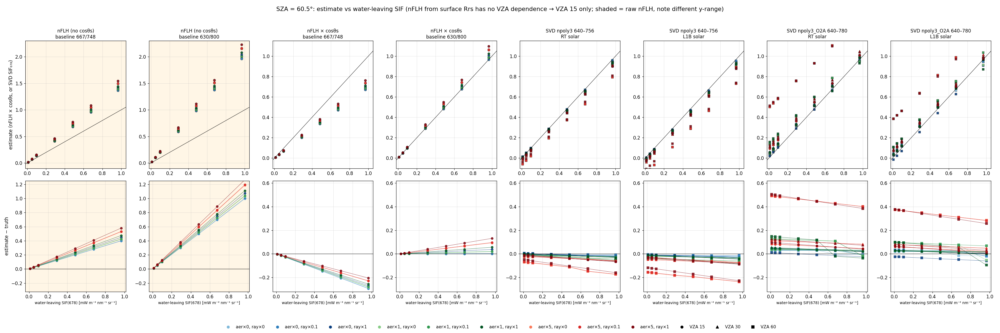

What nFLH and the SVD retrieval each measure in a vSmartMOM scene with known SIF
The same simulated ocean scenes, with known water-leaving SIF, are passed to two estimators. The first is a mock nFLH computed from surface Rrs. The second is the SVD retrieval run on the TOA radiance. Neither returns the water-leaving SIF itself. The standard nFLH baseline removes about 30% of the signal. Even with a SIF-free baseline, nFLH still reads high by 1/td, and without the cos θs factor it is high by 1/(cos θs · td). SVD returns SIF at TOA, which is low by the upward transmittance, and adds an offset that depends on the fitting window.
The scenes
Two RT grids were produced with generate_rayleigh_scaling_surface.jl. They are identical except for the solar zenith angle:
…_NoRayl_sunlight_on_AerColumn_100_grid_surface.nc: SZA 30°.…_NoRayl_sza60p5_sunlight_on_AerColumn_100_grid_surface.nc: SZA 60.5°. SZA 60° itself is avoided because a Gauss node at μ = 0.5 double-counts the direct beam in the surface fluxes.
Each file holds a full factorial grid:
- Rayleigh scale: 10⁻⁸, 0.1, 1.
- GCHPIO aerosol scale (GCHP column 100): 10⁻⁸, 1, 5.
- VZA: 15°, 30°, 60°.
- SIF678 amplitude: 0.01, 0.05, 0.1, 0.3, 0.5, 0.7, 1.
Each file also stores the TOA radiance L_toa, the surface fields Ed and Lw, Rrs = Lw/Ed, and the true water-leaving SIF spectrum sif_waterleaving. The surface is Lambertian with albedo 0.02, so without SIF Rrs = 0.02/π exactly. Any curvature in Rrs is SIF divided by Ed.
The truth used throughout is water-leaving SIF in the OCI band at 678.21 nm, in mW m⁻² nm⁻¹ sr⁻¹ (= W m⁻² µm⁻¹ sr⁻¹).
The two estimators
Mock nFLH. Computed from the RT's own surface Rrs, which is equivalent to a perfect atmospheric correction:
Using the RT's own F0 keeps the mock consistent with the radiative transfer, so nothing in the nFLH comparison comes from a solar mismatch. The comparison plots nFLH × cos θs; the reason is given below.
SVD retrieval. run_pseudo_svd_retrieval is run on noise-free L_toa for every grid case. The reported value is (sif_basis · sif_coeff) at 678.2 nm.
- Fitting windows:
svd_nPC15_npoly3: 640–756 nm, 83 bands.svd_nPC15_npoly3_O2A: 640–780 nm, 100 bands.
- Each window was run with two solar spectra:
- The L1B F0 of granule 20240830T131442, with its Earth–Sun distance, as in
retrieve_rt_grid.jl. - The RT solar spectrum, the same vSmartMOM spectrum used for nFLH, with esd = 1.
- The L1B F0 of granule 20240830T131442, with its Earth–Sun distance, as in
For each geometry and atmosphere, a straight line is fitted through the seven SIF amplitudes. Its slope and intercept describe each estimator.
Why the standard baseline loses 30%
The SIF emission in the RT is broad, so the 667 nm baseline band sits on its short-wavelength shoulder. The water-leaving SIF spectrum, relative to its value at 678.21 nm:
| Band | 629.90 | 667.03 | 678.21 | 748.04 | 799.39 |
|---|---|---|---|---|---|
| SIF / SIF(678.21) | 2×10⁻⁴ | 0.356 | 1 | 0.031 | 0.004 |
A straight line through 667 and 748 nm passes 0.31 above zero at 678 nm. The standard line height is therefore only 0.69 of the peak, before any atmosphere is involved. The 630/800 nm pair has essentially no SIF, so its line height equals the peak.
What nFLH measures
Rrs divides the water-leaving radiance by the irradiance that actually reaches the surface. nFLH then multiplies by the top-of-atmosphere F0:
SIF does not scale with sunlight in these scenes, so normalising by Ed does not cancel anything; it inflates the result. Raw nFLH carries a geometric factor 1/cos θs, which is 1.15 at 30° and 2.03 at 60.5°. On top of that comes 1/td, which grows with Rayleigh, aerosol and SZA. Multiplying by cos θs removes the geometric factor but leaves 1/td.
nFLH from surface Rrs does not depend on VZA. A real nFLH would inherit any VZA dependence from the atmospheric correction, which is not modelled here.
| Slope vs water-leaving SIF(678) (no atmosphere → aerosol ×5, Rayleigh ×1) | SZA 30° | SZA 60.5° |
|---|---|---|
| raw nFLH, 667/748 baseline | 0.80 → 0.84 | 1.41 → 1.60 |
| raw nFLH, 630/800 baseline | 1.15 → 1.21 | 2.03 → 2.31 |
| nFLH × cos θs, 667/748 baseline | 0.70 → 0.73 | 0.70 → 0.79 |
| nFLH × cos θs, 630/800 baseline | 1.00 → 1.05 | 1.00 → 1.14 |
| SVD npoly3, VZA 15° (RT solar) | 0.99 → 0.94 | 0.99 → 0.94 |
With the SIF-free baseline, nFLH × cos θs is exactly 1/td. That gives td = 0.95 at SZA 30° and 0.88 at SZA 60.5° for aerosol ×5 with full Rayleigh. With the standard baseline, the 0.69 loss and the 1/(cos θs td) gain partly cancel. At SZA 60.5°, raw standard nFLH lands closer to 1:1 than the "corrected" one, but only by coincidence.
What the SVD retrieval measures
The forward model adds SIF at TOA, multiplied only by gas transmittance. The retrieved SIF is therefore water-leaving SIF times the upward continuum transmittance, about 1 − bRτR/μv − baerAOD/μv (see SIF through Rayleigh). On top of that comes an additive offset from imperfect fitting.
- Slope. It falls with Rayleigh, aerosol and VZA: 0.99 when clear, 0.94 for aerosol ×5 with full Rayleigh at VZA 15°, and 0.88–0.92 for aerosol ×5 at VZA 60°. It is the same at SZA 30° and 60.5° to within 0.003, because only the upward path matters. This is the opposite of nFLH, which depends on SZA but not on VZA.
- Offset, npoly3 (640–756). Negative or near zero: −0.03 to 0 at VZA ≤ 30°. With aerosol ×5 at VZA 60° it reaches −0.16 with the L1B solar and −0.07 with the RT solar (SZA 60.5°). With the RT solar it is roughly half the size it is with the L1B solar (−0.017 vs −0.029 for the clear SZA 30°, VZA 15° case). This matches the earlier solar-swap test: about half of the SIF-free leakage comes from the solar-spectrum mismatch between the RT and L1B.
- Offset, npoly3_O2A (640–780). Positive: +0.015 to +0.10 at VZA ≤ 30°. At VZA 60° it becomes unstable, reaching about +0.5 at SZA 60.5° with aerosol ×5, where the O₂-A slant path is very long. Here the L1B solar gives a smaller offset than the RT solar, so the solar error partly cancels a positive bias from the window.
- Convergence. Even without noise, most fits stop at the 15-iteration cap. Converged: npoly3 143/378 (L1B solar) and 137/378 (RT solar); npoly3_O2A only 12/378 and 15/378. The values are kept, as in
retrieve_rt_grid.jl, but the O2A results at VZA 60° should not be trusted.



Implications for comparing nFLH with SVD SIF
- Even in this ideal case (perfect atmospheric correction, no noise, Lambertian surface), the ratio of SVD SIF to nFLH is not a constant. For the SIF-free baseline it is about cos θs · td · T↑, plus the SVD offset divided by nFLH. It therefore varies with SZA, VZA, aerosol and Rayleigh.
- Converting nFLH to a radiance comparable with SVD requires at least multiplying by cos θs. Ideally it should also be multiplied by td, since nFLH × cos θs × td = LH, which is water-leaving SIF times the baseline factor. Even after that, SVD returns SIF at TOA and the two still differ by T↑.
- The standard 667/748 baseline is a fixed −31% for the SIF shape used in this RT. The true factor depends on the actual SIF spectral shape, so it is a model assumption, not a constant of nature.
- For SVD at low SIF, the offset matters more than the slope: −0.03 to 0 (npoly3) or +0.02 to +0.10 (npoly3_O2A) when typical ocean SIF is 0.05–0.3.